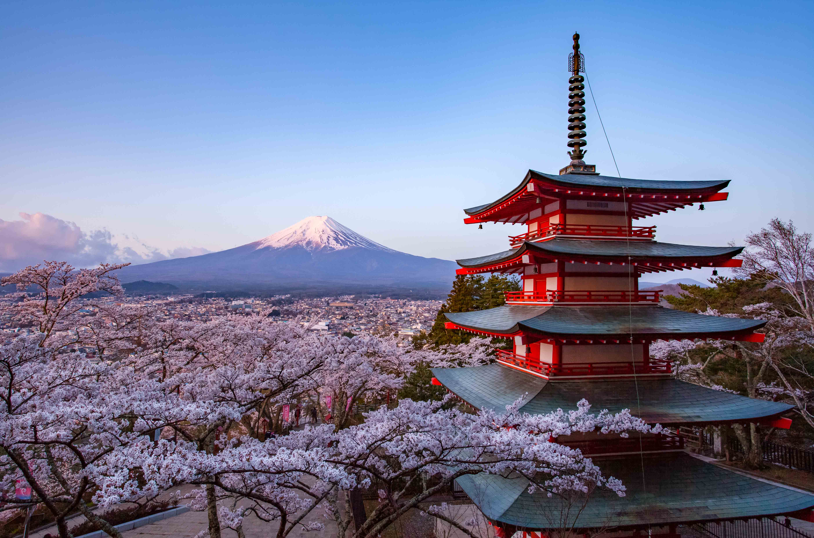
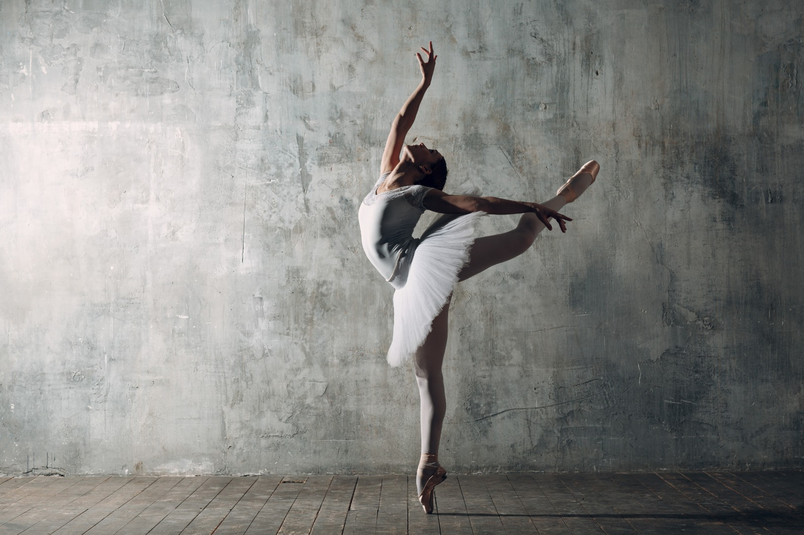
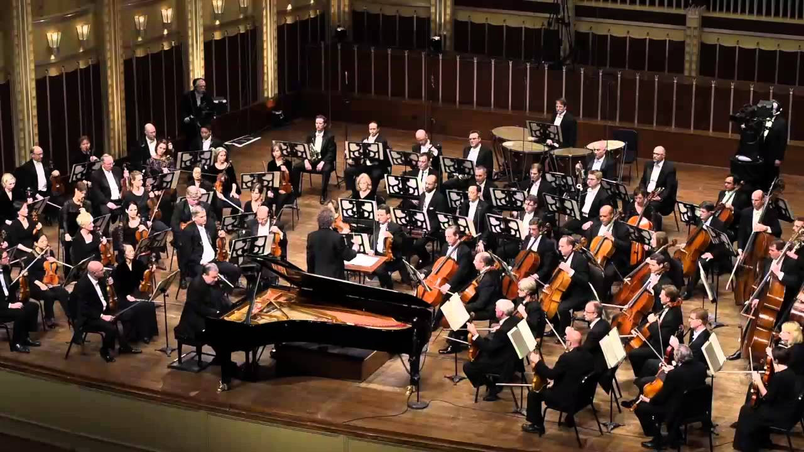

Grandir entre deux cultures
Né au Japon, j'ai passé mon enfance entre Ōta et Tokyo avant de déménager en France à l'âge de dix ans. Grandir dans deux pays différents m'a offert l'opportunité de découvrir des cultures distinctes dès mon plus jeune âge.
Au fil des années, j'ai également beaucoup voyagé en Asie, notamment en Chine, en Thaïlande, aux Philippines, en Inde et au Vietnam. Ces expériences ont nourri ma curiosité, mon ouverture d'esprit et ma capacité d'adaptation à différents environnements et modes de pensée.
Vivre entre les cultures japonaise et française m'a permis de développer une vision plus large du monde. Tandis que la culture japonaise m'a transmis le respect, l'observation, la discipline et l'attention portée aux autres, la culture française m'a encouragé à développer mon expression personnelle, mon esprit critique et ma confiance dans le partage de mes idées.

La danse : discipline et lien social
J'ai découvert la danse classique au Japon avec ma sœur. Plus tard, durant mes dernières années de lycée en France, ma mère et ma sœur m'ont initié aux danses de couple telles que la salsa, la bachata, la kizomba et le rock.
Au-delà des aspects techniques liés au rythme, à la coordination et au mouvement, la danse est devenue pour moi un moyen de créer du lien avec les autres. Elle m'a appris à communiquer, à m'adapter et à développer ma confiance à travers l'interaction non verbale.
Alors que la danse classique a développé ma rigueur, ma précision et ma discipline, les danses de couple ont renforcé mes capacités de communication, mon adaptabilité et mon aisance à interagir avec des personnes d'horizons variés.
Basket-ball en compétition
J'ai découvert le basket-ball au Japon avant de poursuivre cette pratique en France, où j'ai évolué pendant six ans en compétition dans un club évoluant en Régionale 1 Auvergne-Rhône-Alpes.
J'ai joué à l'Étoile de Chamalières, où j'ai appris l'importance de contribuer à un projet collectif, la valeur du travail régulier et la nécessité de répéter certains gestes techniques à l'entraînement, pour par exemple avoir un tir à mi-distance efficace.
Plus que tout, le basket-ball m'a appris à évoluer sous pression, à jouer devant un public nombreux et à communiquer efficacement avec mes coéquipiers dans toutes les situations.
À travers la compétition, j'ai développé l'esprit d'équipe, persévérance, et un fort sens des responsabilités au service d'un objectif commun .

Piano : précision et improvisation
Durant mon enfance au Japon, j'ai étudié le piano classique selon une approche exigeante centrée sur la technique, l'interprétation et le respect des intentions du compositeur. Chaque année, je me produisais devant un large public, ce qui m'a permis de développer ma confiance en moi et d'apprendre à gérer la pression dans des situations exigeantes.
Après mon arrivée en France, j'ai découvert le jazz et ai immédiatement été attiré par sa liberté et sa dimension collective. Au-delà de la musique elle-même, le jazz m'a initié à l'improvisation et à l'interaction avec d'autres musiciens, où l'écoute et l'adaptation sont aussi importantes que la maîtrise technique.
Alors que le piano classique m'a transmis discipline, précision et persévérance, le piano jazz a développé ma créativité, mon adaptabilité et ma capacité à communiquer et construire collectivement à travers la musique.